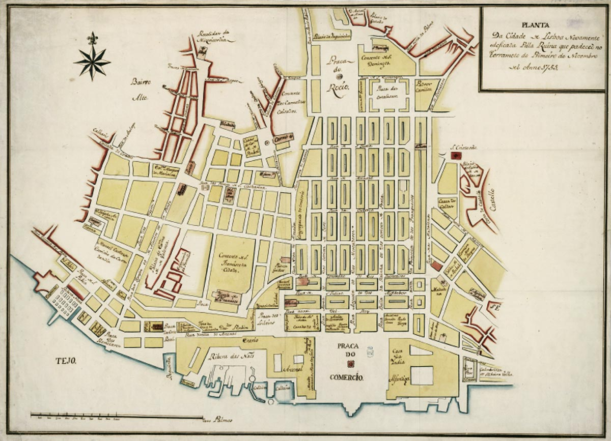
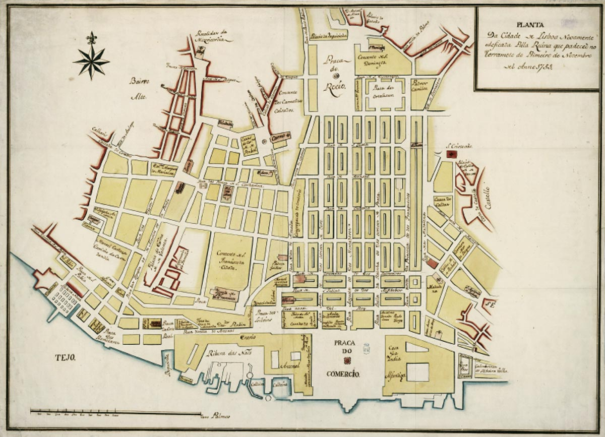
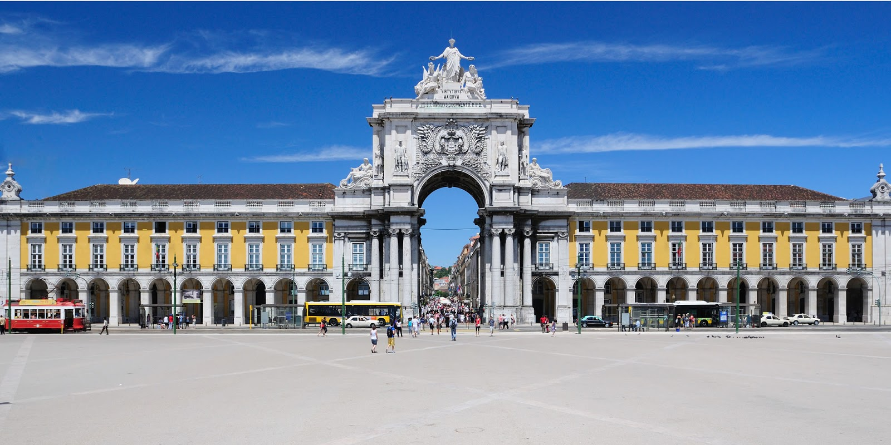
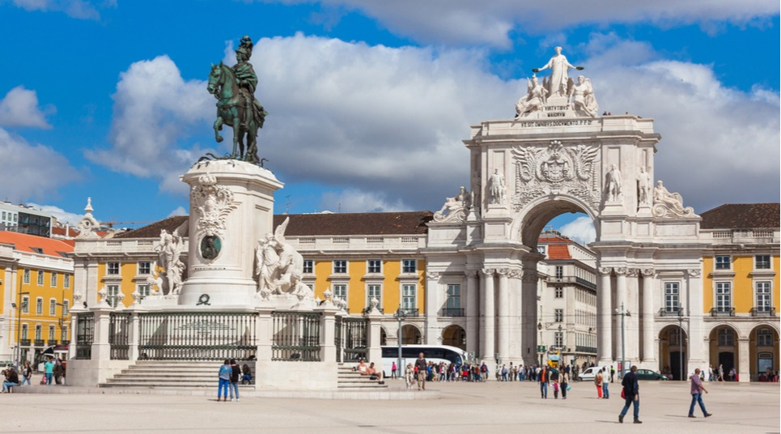
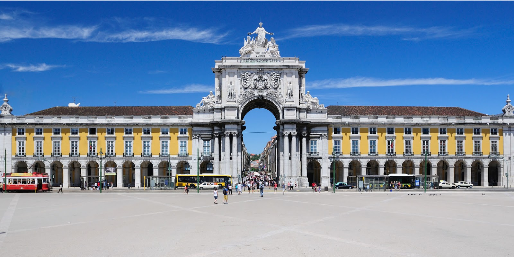
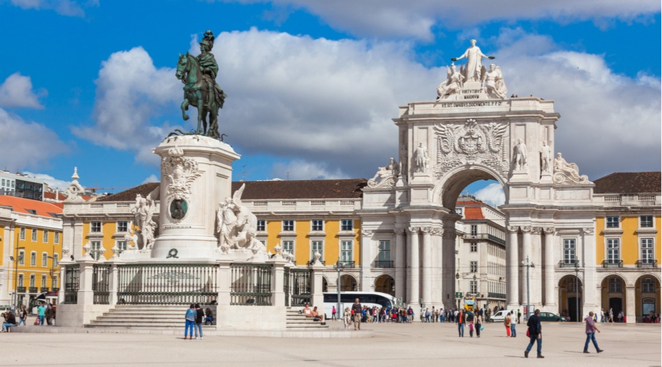

História
Terramoto de 1755
A segunda metade do século XVII é marcada pela reconstrução de Lisboa após o terramoto de 1755 que destrui grande parte da capital. Como consequência do terramoto deflagrou, por toda a cidade, um violento incêndio que agravou os estragos já causados. A zona mais afetada foi a baixa, que possuía uma elevada densidade populacional. Morrem assim cerca de 10 mil pessoas neste desastre.
Baixa
A baixa de Lisboa, também chamada Baixa Pombalina por ter sido edificada por ordem do Marquês de Pombal, na sequência do terramoto de 1755, cobrindo uma área de cerca de 255 hectares. Situa-se entre o Terreiro do Paço, junto ao rio Tejo, e o Rossio e a Praça da Figueira, e longitudinalmente entre o Cais do Sodré, o Chiado, o Carmo, de um lado, a Sé e a colina do Castelo de São Jorge, do outro. A Baixa está totalmente integrada no território da freguesia de Santa Maria Maior.
 

 




Estilo Pombalino
O estilo pombalino é um estilo arquitetónico português do século XVIII, batizado em homenagem a Sebastião José de Carvalho e Melo, o primeiro marquês de Pombal, que foi fundamental na reconstrução de Lisboa após o sismo de 1755. Pombal supervisionou os planos elaborados pelos engenheiros militares Manuel da Maia, Eugénio dos Santos e Elias Sebastian Pope. A malha urbana medieval e orgânica da cidade foi substituída por um plano de grade com estradas e pavimentos largos, que tinha como eixo principal a Rua Augusta.
Os edifícios pombalinos estão entre as primeiras construções sismicamente protegidas na Europa. O estilo pombalino introduziu as primeiras características de projeto anti-sísmicas e os primeiros métodos de construção pré-fabricados. Uma estrutura de madeira flexível implantada nas paredes, pisos e telhados e depois coberta por materiais de construção pré-fabricados, chamada gaiola pombalina, era conhecida pois "treme, mas não cai". A estrutura em madeira foi inspirada nos métodos de construção dos navios. A madeira, sendo deformável, tinha uma elevada capacidade de resistência às forças de tração e compressão num meio constantemente agitado.
Por outro lado, a alvenaria é mais eficaz na resistência aos incêndios. A solução de incorporar a estrutura em madeira nas paredes de alvenaria juntava as vantagens de ambos os tipos de construção.
Imagens